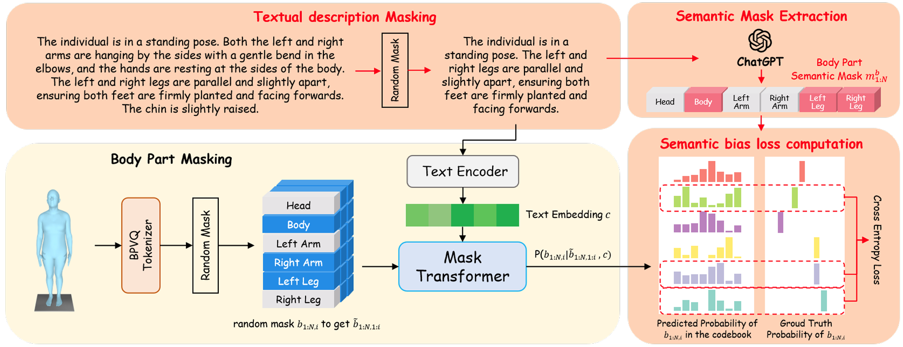
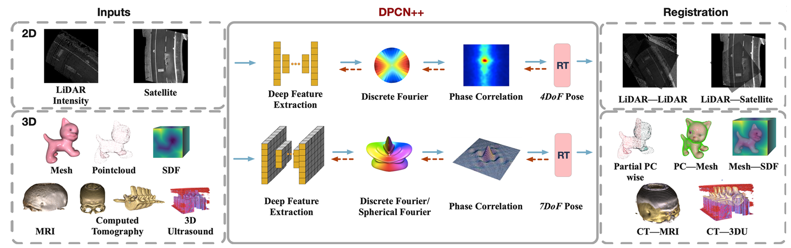
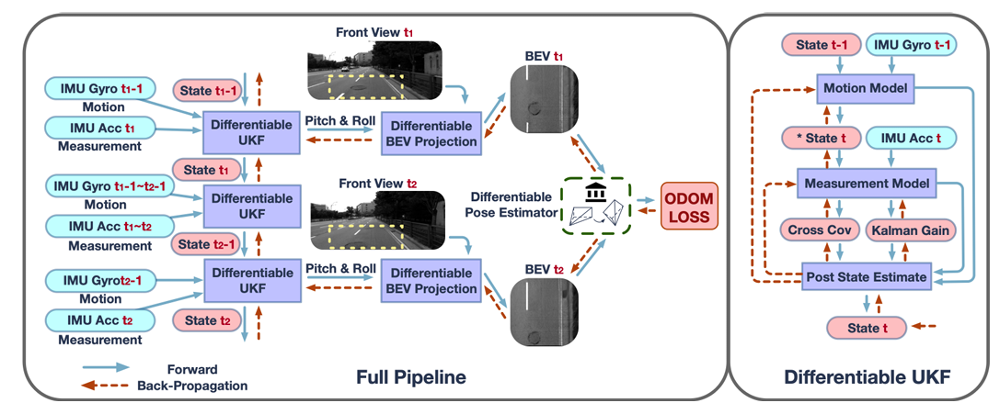

|
Haozhe Du 杜浩哲 I'm currently a Master student in Robotics Lab at Zhejiang University, advised by Prof. Rong Xiong. Previously, I received my B.S. degree in automation and also a dual degree in mechatronic engineering from Chu Kochen Honors College, Zhejiang University. My current research topic lies in robot learning and robot manipulation. I am interested in designing generalizable algorithms for state estimation, dynamics modeling, and planning for deformable object manipulation. Previously I focus on motion prediction and decision making for robot swarm. My long-term goal is to build robust, generalizable autonomous robot agents that can achieve and surpass human performance. |
{kind=link}
Research |

|
PolyFold: A Generalizable Framework for Language-Conditioned Bimanual Cloth Folding
Haozhe Du, Rong Xiong, Yue Wang Under Review
project page /
abstract
Cloth folding stands as an intricate subject in robot manipulation, requiring robots to fold diverse fabrics into different configurations according to human intentions. Most previous approaches address this problem in a vision/language goal-conditioned way. They usually depend on precise subgoals and lack inherent multi-step reasoning ability. They also require substantial training data from expert demonstrations and often face difficulties generalizing to different, previously unseen cloth appearances and tasks. To tackle these problems, we present PolyFold, a novel language-conditioned bimanual cloth folding framework that excels in zero-shot generalization and inherent multi-step reasoning capability, while also operating in an expert-demonstration-free manner. Given solely a language goal (even if it is ambiguous), PolyFold utilizes parameterized polygon model, Large Language Models (LLMs), and a self-supervised learning downstream policy to achieve a sequence of successful cloth folding actions. PolyFold can be divided into three key parts: subgoal decomposition LLM, symmetrical fold line generation LLM, and fold line guided bimanual pick-and-place policy. Experiments show that PolyFold is able to zero-shot generalize to various cloth types and 70 cloth folding tasks when providing only final language instructions, surpassing previous SOTA vision-conditioned and language-conditioned methods. Our method can also be directly deployed in real-world scenarios. Generalizable bimanual cloth folding framework that listens to user language instructions and achieves successful folding results on unseen cloth and unseen tasks. |
|  |
Semantic Mask Transformer for 3D Human Pose Generation with Detailed Text Description
Zhike Chen, Haozhe Du, Haodong Zhang, Rong Xiong in submission to AAAI 2025, under review
abstract
Previous methods for generating 3D human poses from detailed text descriptions often encounter semantic mismatches and struggle to produce precise local body part actions. These challenges primarily arise from the limited variety of body part action combinations in existing datasets. To address these issues, we introduce the Semantic Mask Transformer (SMT), a text-driven animation framework designed to synthesize 3D poses that closely align with detailed textual descriptions. The key innovation of SMT lies in its integration of semantic biases derived from a Large Language Model into the training objectives, thereby enhancing local semantic consistency. Equipped with mask data augmentation, body part modeling, and semantic bias training objectives, our SMT effectively generates high-quality poses while maintaining accurate semantic alignment with the input descriptions. Furthermore, the ablation study demonstrates that the semantic bias objectives can be applied across various backbone architectures. Integrating semantic biases derived from a Large Language Model into the training objectives to enhance local semantic consistency. |
|  |
DPCN++: Differentiable Phase Correlation Network for Versatile Pose Registration
Zexi Chen, Yiyi Liao, Haozhe Du, Haodong Zhang, Xuecheng Xu, Haojian Lu, Rong Xiong, and Yue Wang. IEEE Transactions on Pattern Analysis and Machine Intelligence (TPAMI) 2023.
pdf /
arxiv /
abstract /
bibtex
Pose registration is critical in vision and robotics. This paper focuses on the challenging task of initialization-free pose registration up to 7DoF for homogeneous and heterogeneous measurements. While recent learning-based methods show promise using differentiable solvers, they either rely on heuristically defined correspondences or are prone to local minima. We present a differentiable phase correlation (DPC) solver that is globally convergent and correspondence-free. When combined with simple feature extraction networks, our general framework DPCN++ allows for versatile pose registration with arbitrary initialization. Specifically, the feature extraction networks first learn dense feature grids from a pair of homogeneous/heterogeneous measurements. These feature grids are then transformed into a translation and scale invariant spectrum representation based on Fourier transform and spherical radial aggregation, decoupling translation and scale from rotation. Next, the rotation, scale, and translation are independently and efficiently estimated in the spectrum step-by-step using the DPC solver. The entire pipeline is differentiable and trained end-to-end. We evaluate DCPN++ on a wide range of registration tasks taking different input modalities, including 2D bird's-eye view images, 3D object and scene measurements, and medical images. Experimental results demonstrate that DCPN++ outperforms both classical and learning-based baselines, especially on partially observed and heterogeneous measurements.
@article{chen2023dpcn++,
title={DPCN++: Differentiable Phase Correlation Network for Versatile Pose Registration},
author={Chen, Zexi and Liao, Yiyi and Du, Haozhe and Zhang, Haodong and Xu, Xuecheng and Lu, Haojian and Xiong, Rong and Wang, Yue},
journal={IEEE Transactions on Pattern Analysis and Machine Intelligence},
year={2023},
publisher={IEEE}
}
Differentiable phase correlation (DPC) solver for initialization-free up to 7DoF pose registration of homogeneous and heterogeneous measurements. |
|  |
Learning Interpretable BEV Based VIO without Deep Neural Networks
Zexi Chen, Haozhe Du, Xuecheng Xu, Rong Xiong, Yiyi Liao, Yue Wang. Conference on Robot Learning (CoRL) 2023.
pdf /
arxiv /
abstract /
bibtex
Monocular visual-inertial odometry (VIO) is a critical problem in robotics and autonomous driving. Traditional methods solve this problem based on filtering or optimization. While being fully interpretable, they rely on manual interference and empirical parameter tuning. On the other hand, learning-based approaches allow for end-to-end training but require a large number of training data to learn millions of parameters. However, the non-interpretable and heavy models hinder the generalization ability. In this paper, we propose a fully differentiable, and interpretable, bird-eye-view (BEV) based VIO model for robots with local planar motion that can be trained without deep neural networks. Specifically, we first adopt Unscented Kalman Filter as a differentiable layer to predict the pitch and roll, where the covariance matrices of noise are learned to filter out the noise of the IMU raw data. Second, the refined pitch and roll are adopted to retrieve a gravity-aligned BEV image of each frame using differentiable camera projection. Finally, a differentiable pose estimator is utilized to estimate the remaining 3 DoF poses between the BEV frames: leading to a 5 DoF pose estimation. Our method allows for learning the covariance matrices end-to-end supervised by the pose estimation loss, demonstrating superior performance to empirical baselines. Experimental results on synthetic and real-world datasets demonstrate that our simple approach is competitive with state-of-the-art methods and generalizes well on unseen scenes.
@inproceedings{chen2023learning,
title={Learning interpretable BEV based VIO without deep neural networks},
author={Chen, Zexi and Du, Haozhe and Xuecheng, XU and Xiong, Rong and Liao, Yiyi and Wang, Yue},
booktitle={Conference on Robot Learning},
pages={1289--1298},
year={2023},
organization={PMLR}
}
Fully differentiable, and interpretable bird-eye-view (BEV) based VIO model. |

|
Multi-Agent Trajectory Prediction Based on Graph Neural Network
Haozhe Du, Zhike Chen, Yufeng Wang, Zheyuan Huang, Yunkai Wang, Rong Xiong. IEEE International Conference on Real-time Computing and Robotics (RCAR), 2021
pdf /
abstract /
bibtex /
code
Many tasks have demand on precise predictions of agents or moving objects. Previous prediction methods usually only focus on the kinematic model of moving objects or the environment. However, the target tasks of agents may influence the prediction of agents in great sense, especially in tasks of confrontation. Therefore traditional methods cannot work well in such scenes. In this paper, we propose a heterogeneous graph neural network method to deal with the multi-agent trajectory prediction problem. Our method can aggregate and pass messages representing environment and also agents' tasks due to the elaborate design of graph neural network structure. We validate our method on the Robocup Small Size League simulation platform which focuses on multi-agent coordination and confrontation in the form of soccer games. After making our own ZJUNlictSSL dataset, we predict the position of all robots on the pitch of certain time gaps based on the limited information we get from vision. The results prove that our method is of high prediction accuracy and low prediction error compared with conventional kinematic motion methods.
@inproceedings{du2021multi,
title={Multi-agent trajectory prediction based on graph neural network},
author={Du, Haozhe and Chen, Zhike and Wang, Yufeng and Huang, Zheyuan and Wang, Yunkai and Xiong, Rong},
booktitle={2021 IEEE International Conference on Real-time Computing and Robotics (RCAR)},
pages={632--637},
year={2021},
organization={IEEE}
}
Heterogeneous graph neural network for robot motion prediction in soccer robot platform that features strong confrontation and cooperation. |
Project |
|
|
Decision Making System for Soccer Robot Swarm (Robocup Small Size League)
video (bilibili) /
open source project /
team description paper
Centralized and hierarchical decision making system for soccer robot swarm, which can be divided into three parts: skill, tactic and play. Skill: single robot skill, such as passing, tacking, running. Tactic: value-function based future robot position calculation. Play: general state calculation (offense, defense), role and task assignment. |
Education |
|
|
Zhejiang University September 2022 - March 2025 (Expected)
September 2018 - June 2022
|
|
|
|
Website Template from https://jonbarron.info/ |